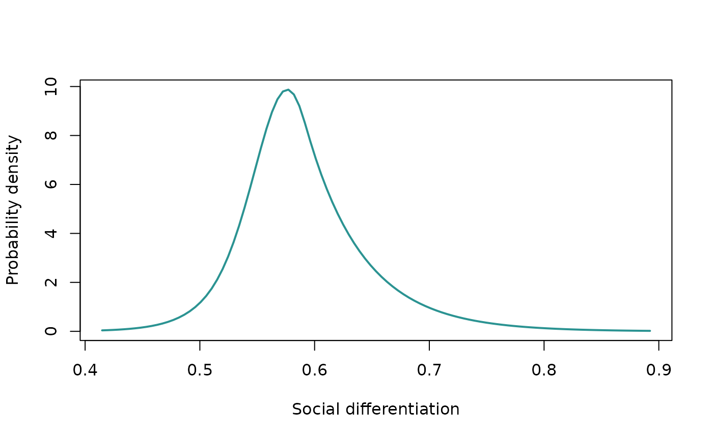

Draws networks from the posterior of a fitted edge model and calculates a
network metric for each one, giving a posterior distribution of the metric
that carries the uncertainty in the edge weights. Use it to describe a
network, for example with the median and credible interval of each node's
strength, or to compare metrics between nodes or networks. To use a metric
in a regression, use bison_brm().
Arguments
- obj
A fitted
bison_modelobject.- metric_string
Name of the metric, made of a target and a metric separated by an underscore, e.g.
"node_strength"or"global_cv". See Available metrics.- num_draws
Number of posterior draws to use. Each draw is one plausible version of the network. Draws are chosen at random, without replacement unless more are requested than the model has.
- standardise
If
TRUE, metrics are mean-centred within each posterior draw (so each row has mean 0). They are not divided by the standard deviation. Not available for global metrics.- transform
Only used for
"edge_weight". IfTRUE(default), edge weights are on the natural scale (probabilities or rates); ifFALSEthey're on the link scale (logit or log). All other metrics are always calculated from natural-scale edge weights. In models with an intercept or other effects, natural-scale edge weights are for an observation where those effects are 0.
Value
A matrix with one row per posterior draw and one column per target:
per dyad (in the order of get_edgelist()) for edge metrics, per node (in
the order of the node factor levels, with nodes as column names) for node
metrics, and a single column for global metrics. Summarise it with, for
example, apply(x, 2, quantile, probs = c(0.05, 0.5, 0.95)), or plot it
with plot_metric().
Available metrics
All metrics are calculated on the weighted network unless they take a
threshold [t], in which case edges with weight at or above t count as
present and the rest as absent.
edge_weight: the edge weights themselves.node_strength: sum of the weights of a node's edges (in and out edges combined in directed networks).node_degree[t]: number of edges with weight at or abovet.node_eigen: eigenvector centrality. Edge direction is ignored in directed networks.node_betweenness: betweenness, using 1/weight as the distance (directed paths in directed networks).node_closeness: closeness, using 1/weight as the distance (paths leaving the node in directed networks).node_clustering[t]: local clustering coefficient of the thresholded network.global_density: mean edge weight of the dyads in the model.global_cv: coefficient of variation of edge weights (social differentiation).global_std: standard deviation of edge weights.global_diameter: diameter of the network (the longest shortest path between two nodes), using 1/weight as the distance.global_clustering[t]: global clustering coefficient of the thresholded network (0 if there are no connected triples).
Nodes and dyads without data
Metrics are calculated from the dyads in the model. Dyads that aren't in the
data have no edge, so they don't contribute to strength or degree and act as
infinitely long paths for betweenness and closeness. Nodes with no dyads at
all (kept from factor levels) therefore have fixed values, such as 0 strength
or NaN closeness, and a warning is given.
See also
plot_metric(), bison_brm(), and bison_to_igraph() for
metrics not listed here.
Examples
sim_data <- simulate_bison_model("binary", aggregated = TRUE)
fit_edge <- bison_model(
(event | effort) ~ dyad(node_1_id, node_2_id),
data = sim_data$df_sim,
model_type = "binary_conjugate",
priors = get_default_priors("binary_conjugate")
)
strength <- extract_metric(fit_edge, "node_strength", num_draws = 100)
apply(strength, 2, quantile, probs = c(0.05, 0.5, 0.95))
#> 1 2 3 4 5 6 7 8
#> 5% 4.510720 2.948991 3.572425 3.609555 2.300049 2.362415 3.937748 2.980282
#> 50% 5.580923 3.821409 4.461237 4.417268 3.125335 3.230003 4.795576 3.910598
#> 95% 6.376555 5.086607 5.591574 5.368723 3.962550 4.022126 5.682136 4.784808
#> 9 10
#> 5% 3.060653 3.129024
#> 50% 4.233831 4.059305
#> 95% 5.101081 5.266539
cv <- extract_metric(fit_edge, "global_cv", num_draws = 100)
plot_metric(cv, "Social differentiation")
